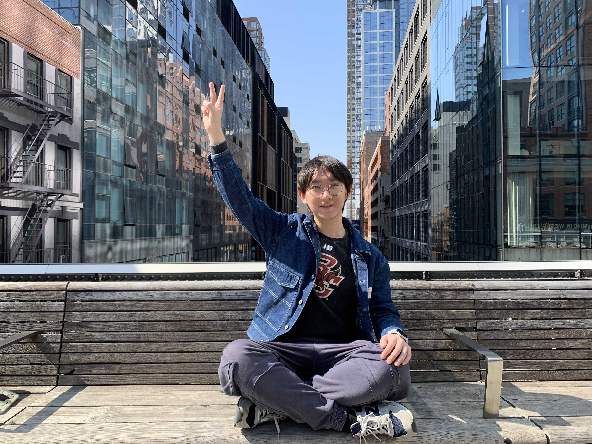

|
Vic Feng
wfeng@g.harvard.edu
I'm a second-year Ph.D. student at Harvard Cloud Networking and Systems Group. I enjoy doing research in the field
of datacenter networking and distributed systems. Currently, I am working on the programmable data plane (Tofino & FPGA).
I am fortunate to have the chance to be guided by Prof. Minlan Yu and work closely with Prof. Gianni Antichi, Prof. Ran Ben Basat and Dr. Jiaqi Gao.
Linkedin
|
Email
|
GitHub
|

|
|
Current Projects
|
Undergrad projects
-
(TC) Tapping into NFV Environment for Opportunistic Serverless Edge Function Deployment
Lu Zhang, Vic Feng, et al. IEEE Transactions on Computers. Sep. 2021
[paper]
-
(SIGMOD) Allign: Aligning All-Pair Near-Duplicate Passages in Long Texts
Vic Feng and Dong Deng. ACM SIGMOD. Jun. 2021
[paper]
|
Professional Experience
-
Amazon Web Services, Shanghai 10/2020 - 05/2021
Project: Hack deep learning compilers
-
Akuna Capital, Shanghai06/2020 - 08/2020
Project: Play with low-latency trading systems
|
Sevices
-
NSDI 2022 External Reviewer
-
SOSP 2021 AEC
|
Mentoring Experience
-
Katarina Cheng (Harvard REU summer 2022): Data Structre Library for Programmable Switches
-
Andrew Huang (Harvard REU summer 2022): Using Programmable Switches to Trade Stocks
|
|